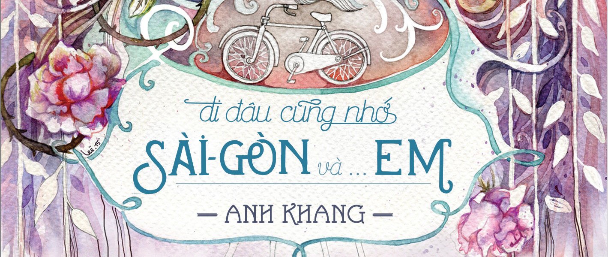
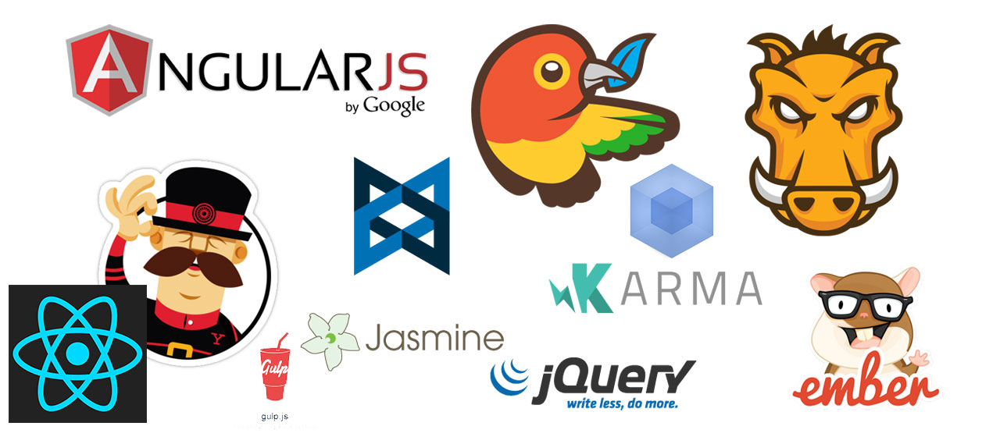

Phần mềm cũng giống bánh mỳ và… xôi
Posted by KhuyenNguyen on December 20, 2016
Một buổi sáng nọ hồi còn ở Việt Nam, mình lỡ dậy hơi… sớm nên mới lò dò ra ngoài tìm chỗ ăn sáng. Trước nhà mình có hai xe bánh mì khá lâu đời, khách lúc nào cũng đông. Cạnh đấy là quán xôi lá chuối nho nhỏ, mỗi lần đi ngang qua lại nghe mùi lá chuối thơm nức mũi.
Gặm tạm ổ bánh mì cho bớt đói lòng, nhìn chị bán bánh mì, bé bán xôi ngoài ngõ, bỗng dưng mình lại nghĩ tới coder, tới phần mềm. Đó chính là lý do bài viết này ra đời. Tên bài viết lấy cảm hứng từ tác phẩm “Đi đâu cũng nhớ Sài gòn và em” của Anh Khang.
Xôi và phần mềm
Xôi là một món ăn truyền thống Việt Nam, khá quen thuộc với nhiều bạn trẻ. Thuở nhỏ, mỗi sáng mình thường được mẹ cho 5 nghìn, đủ mua một gói xôi bắp hoặc xôi gấc nho nhỏ cho bữa sáng. Một chút dẻo dẻo bùi bùi của nếp, ngọt béo của đậu phụng là đủ ấm bụng.
Nấu một nồi xôi ngon không hề dễ dàng. Ta phải chọn gạo nếp loại tốt, ngâm nước và muối lâu để làm sạch gạo. Tiếp theo, ta cho gạo đã ngâm vào chõ đồ xôi, đun cách thuỷ đến khi xôi chín dẻo. Với mỗi loại xôi khác nhau, ta phải chế biến từng loại nguyên liệu, trộn vào xôi, khá là công phu.
Làm phần mềm ngày xưa cũng giống nấu xôi. Ta phải xác định yêu cầu, ngồi code tay từng dòng code một cho đến khi hoàn tất một module. Sau đó, ta lại tiếp tục code module khác, sau đó ghép các module lại với nhau.
Ủa, làm phần mềm cũng giống như nấu xôi, vậy còn bánh mì thì có liên quan gì đến phần mềm?
Bánh mì và phần mềm
Với người Việt Nam, bánh mì là một món ăn quen thuộc và phổ biến chẳng kém gì xôi. Ta có thể ăn bánh mì cả tuần mà không ngán: bánh mì ốp la, bánh mì thịt, bánh mì phá lấu, bánh mì heo quay, … Vỏ ngoài giòn, cắn một miếng là cảm nhận được ngay bao vị chua, cay, mặn, ngọt của lớp nhân bên trong.
Món bánh mì cũng không quá khó làm. Ta chỉ cần đi mua bánh mì, mua tí thịt nguội, bỏ thêm tí dưa chưa, chan thêm chút nước tương hoặc nước sốt là đã có một ổ bánh mì ngon lành.
Phần mềm ngày nay lại có xu hướng giống… bánh mì hơn. Không ai tự đi nướng bánh mì, chỉ cần ra lò bánh mì mua một ổ. Họ chỉ cần tìm nhân ngon, pha nước chấm ngon là có thể làm ra một ổ bánh mì ngon.
Làm phần mềm cũng thế. Coder chúng ta tin tưởng và sử dụng database sẵn có (MS SQL, MongoDB) chứ không ai viết lại một cái database mới. Chúng ta tích hợp thư viện/API để tiết kiệm thời gian chứ không ngồi xây dựng lại từ đầu, vừa mất thời gian vừa nhiều lỗi.
Quan hệ biện chứng giữa cô bán bánh mì, chị bán xôi và anh lập trình viên
Món xôi chưa chắc đã ngon hơn món bánh mì, nhưng chị bán xôi chắc chắn sẽ cực hơn cô bán bánh mì. Có thể dễ dàng làm một ổ bánh mì ngon với đủ vật liệu, nhưng rất khó để nấu một nồi xôi ngon.
Trong giới lập trình, “bánh mì” cũng đang lấn lướt “xôi”. Các website/software lớn đều được xây dựng dựa trên các framework, sử dụng nhiều thư viện và API.
Tuy vậy, dev Việt Nam hầu hết lại thích… ngồi xuống và code. Họ thường khoái nấu xôi, trong khi trình độ và thời gian không đủ. Nguyên nhân là do trong quá trình học tập, các thầy cô thường khuyên ta nên tự viết tất cả từ đầu.
Điều này không sai, vì nó giúp ta học hỏi được nhiều hơn, hiểu được bản chất vấn đề. Tuy nhiên, khi đi làm thì chuyện lại khác. Ta phải chạy đua với deadline, với yêu cầu khách hàng, với chất lượng công việc!
Mình nghĩ rằng, đôi lúc lập trình viên nên học tập.. chị bán bánh mì, khi cần thì cứ đi mua bánh mì, mua thịt (thư viện) về chỉnh sửa, tích hợp vào code. Vừa nhanh lại vừa chất lượng.
Kết
Xét cho cùng, cả xôi hay bánh mì đều có cái hay, cái độc đáo riêng. Bên cạnh các xe bánh mì nổi tiếng, các hàng xôi Yến, xôi chè Lê Thị Riêng, xôi Lá Chuối vẫn đông nghẹt khách mỗi ngày.
Phần mềm cũng thế, với một số yêu cầu phức tạp, chưa có ai làm, thì việc dev phải “xắn tay áo” lên để … nấu xôi, nhầm, để code tay là cách duy nhất.
Tương tự như bài “đôi khi ngồi code là cách… ngu nhất để giải quyết vấn đề”, lời khuyên mình muốn gửi đến qua bài này là: bớt suy nghĩ như chị bán xôi, mà hay suy nghĩ như cô bán bánh mì; tận dụng những thứ người khác đã làm để nâng cao tiến độ và chất lượng công việc của mình.
Bài viết được sưu tầm tại blog: Tôi đi code dạo